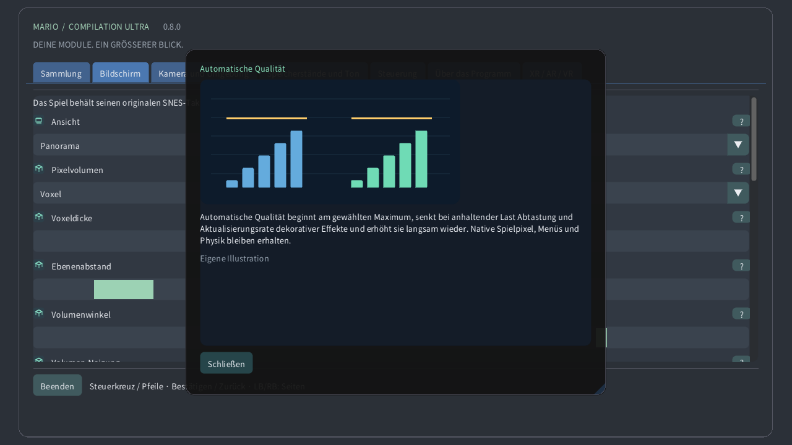

Wähle ein lokales Modul, starte ein Spiel oder öffne seine Anleitung. Öffentliche Downloads enthalten weder Spiele noch persönliche Spielstände.
Original zeigt den Konsolenbildschirm, Panorama erweitert ihn. Atlas umfasst verfügbares Gelände; die vollständige Karte liest bei unterstütztem Format das gesamte geladene Gebiet, auch unerforschte Stellen. Türen können das Gebiet wechseln.
Die Ansicht folgt der Originalkamera, der Spielfigur oder einer festen Position. Das verändert nur den Ausschnitt, bewegt keine Figur und aktiviert keine entfernten Gegner.
Zoom bestimmt den sichtbaren Bereich. Auf der Uhr zeigt 0% die gesamte geladene Karte, 100% die Originalkamera. Die Spielgeschwindigkeit bleibt gleich.
Auf runden Uhren biegt die Linse das gesamte Spielrechteck zum Kreis, ohne Quellränder abzuschneiden. Bedienelemente und Text bleiben eben. Ausgeschaltet erscheint ein unverzerrtes Rechteck.
Eine erkannte Krone oder Drehlünette zoomt im Spiel und scrollt durch Menüs. Empfindlichkeit bestimmt die Wirkung jeder Drehung, Umkehren vertauscht die Richtung. Touch-Zoom funktioniert auch ohne Krone.
Nächste Pixel erhält harte Kanten. Scharf bleibt auch bei ungeraden Größen deutlich. Weich glättet Vergrößerungen. Quellbild und Kollisionen bleiben unverändert.
Quadratische Pixel erhalten die ursprüngliche Pixelform; TV 4:3 bildet ein Fernsehbild nach. Pixelwelt verwendet quadratische Pixel und ganzzahligen Zoom.
Automatische Qualität beginnt am gewählten Maximum, senkt bei anhaltender Last Abtastung und Aktualisierungsrate dekorativer Effekte und erhöht sie langsam wieder. Native Spielpixel, Menüs und Physik bleiben erhalten.
Reserve lässt Zeit für unerwartete Arbeit frei. Mehr Reserve begünstigt flüssige Ausgabe. Extra flüssig nutzt 40%, Quest mindestens 35%. Bei dauerhaftem Spielraum steigt die Qualität wieder.
Androids lokaler Wärmestatus kann dekorative Details bei zunehmender Hitze begrenzen. Dafür sind weder zusätzliche Rechte noch Netzwerk nötig. Das System bestimmt weiterhin reale Taktraten und Bildfrequenz.
Vsync folgt dem Bildschirm und vermindert Bildrisse. Das Spiel behält seinen eigenen Takt. Quest verwendet die gewählte Headset-Frequenz; die Reserve richtet sich nach ihr.
Effizienter CRT erhält den Retro-Look mit weniger Rechenarbeit. Automatisch startet effizient und erlaubt die Referenz erst nach dauerhaft gemessener GPU-Reserve. Referenz erzwingt die aufwendigere Berechnung.
Wähle Fenster, Bildschirm und Vollbildverhalten. Diese Optionen ändern den Anzeigeort, nicht das geladene Gebiet oder die Spielstände.
Der Hintergrund füllt den Raum um das Spiel. Weiche Landschaft übernimmt dessen Farben; Mitternacht und Schwarz sind ruhiger. Unschärfe und Helligkeit betreffen diese Umgebung.
Unschärfe glättet die umgebende Landschaft, Helligkeit regelt ihr Licht. Das native Spielbild bleibt unverändert. Bei Last kann die Automatik diese Dekoration seltener aktualisieren.
Weiche Ränder blenden die Erweiterung nahe der Originalkamera in die Umgebung. Ausgeschaltet bleibt eine klare Kante. Vollständige Karten behalten ihren eigenen Ausschnitt.
Die Markierung zeigt die Spielfigur, der Rahmen die Originalkamera, die Minikarte ihre Lage im Gebiet. Eine Nahansicht hält den nativen Bildschirm beim Herauszoomen lesbar.
Vorschauen zeigen geprüfte Platzierungen oder lokal beobachtetes Aussehen. Blasse Objekte und Umrisse sind Hinweise, keine zusätzlich aktiven Gegner. Deckkraft und Beschriftungen ändern ihre Sichtbarkeit.
Bestimme Ecke, Größe, Deckkraft und Dauer der Bedienhinweise. Bei Zeitlimit null bleiben sie sichtbar. Diese Einblendungen ändern weder Spiel noch Kamera.
Passe Menüsprache, Größe und Kontrast zum angenehmen Lesen an. Illustrierte Anleitungen sind offline verfügbar. Spielgrafik und Modulsprache sind davon unabhängig.
Wähle Tastenbelegung und Stick-Totzonen. Größere Totzonen ignorieren mehr kleine Bewegungen. Schnellsteuerung ergänzt Kamerakürzel; normale Spielaktionen bleiben verfügbar.
Touch-Tasten unterstützen mehrere Finger gleichzeitig. Automatisch zeigt sie ohne verbundenes Gamepad. Position, Größe, Deckkraft und Händigkeit ändern die Bedienung, nicht die Spielphysik.
Halte die gewählte Taste, um exakte jüngere Zustände zurückzuspulen. Die Dauer hängt von Speicher und Spiel ab. Rückwärtston und Anzeige sind optional; Speicherplätze bleiben getrennt.
Ein Speicherplatz enthält den aktuellen Maschinenzustand. Laden stellt ihn wieder her; automatische Fortsetzung hat einen eigenen Platz. Batterie-Fortschritt ist getrennt. Ersetzen verlangt eine Bestätigung.
Lautstärke und Stummschaltung steuern die lokale Wiedergabe. Sie verändern weder Spieltempo noch Spielstände. Rückspulton wird separat eingestellt.
Pause löst gehaltene Eingaben. Fokus und Tracking bestimmen automatische Pausen. Fortsetzen behält das Spiel bei; Beenden schreibt den Batterie-Fortschritt.
Wähle schwebenden Bildschirm, Wand, Bodenatlas, Arcade-Tisch, CRT-Raum oder gebogenen Bildschirm. Dasselbe Spiel läuft weiter; nur seine räumliche Darstellung ändert sich.
Größe, Abstand, Höhe, Neigung und Lücke platzieren das virtuelle Objekt im Raum. Es gelten die angezeigten Einheiten. Zentrieren bringt es ohne Spielneustart wieder in Reichweite.
Automatische Wandplatzierung nutzt freigegebene Raumdaten, sofern vorhanden. Sperren oder Speichern hält die Position fest. Trackingverlust kann pausieren; manuelle Platzierung bleibt möglich.
Virtuelle Fernbedienung, Hände und direkte Berührung bedienen dieselben Spielaktionen. Größe und Hinweise verbessern die Bedienbarkeit. Haptikstärke verändert die Rückmeldung, nicht den Eingabezeitpunkt.
CRT ergänzt Scanlines, RGB-Maske, gewölbtes Glas und Reflexionen. Mehr Stärke ist ein visueller Stil, keine neue Spielinformation. Automatische Qualität kann teure Dekoration vereinfachen.
Passthrough zeigt deinen echten Raum; ohne ihn liefert die virtuelle Umgebung den Hintergrund. Transparenz, umgebende Landschaft und Helligkeit verändern die Spielumgebung.
Leinwand- und Augendetail begrenzen unterschiedliche Ebenen. Die Automatik passt beide an. Die unabhängige Menüebene bleibt scharf; periphere Foveation ist bei Unterstützung optional.
Das Fragezeichen öffnet eine illustrierte Erklärung. Mauszeiger oder Controller-Fokus zeigen eine Vorschau; Berührung öffnet die Karte. Die Illustrationen sind eigene Beispiele, keine Modulbilder.
Manuelle Qualität stoppt die automatische Anpassung und behält die gewählte Detailstufe. Automatische Qualität aktiviert sie wieder; Extra flüssig lässt mehr Leistungsreserve.
Auf kompatiblen Quest-Systemen kann Dauerlast periphere Bilddetails reduzieren und die Mitte erhalten. Menüs bleiben in einer separaten scharfen Ebene. Ohne Unterstützung greift der normale Renderer. Die Qualität im realen Headset ist ungeprüft.
Optionale prozedurale 3D-Darstellung: Pixel werden zu festen Säulen; Gelände, Hintergründe und Figuren liegen auf getrennten Tiefenebenen. Relief ist flach, Voxel sind dicker. Dicke ändert die Tiefe, Winkel die Bildschirmansicht. Automatische Qualität reduziert Details unter Last. HUD und native Nahansichten behalten Originalpixel. Spezialszenen verwenden den Originalbildschirm. Dies ist eine Interpretation, keine Rekonstruktion unsichtbarer Rückseiten. Leistung auf echten Geräten ist ungetestet.